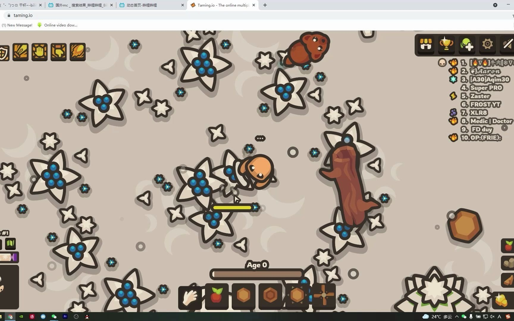
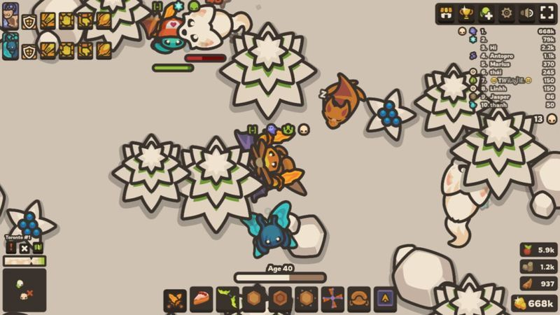

Taming.io is a multiplayer survival game where you tame wild pets, build bases, gather resources, and defend against other players. The game combines crafting, building, and pet management into a survival experience. Your pets fight for you, gather resources, and provide passive benefits. This guide covers everything from pet selection to base defense strategies.
🎯 Game Basics

Objective
In Taming.io, your goals are to tame powerful pets, build a secure base, gather resources, and survive against other players. Pets are your companions that fight, gather, and protect you.
Resources
- Wood - From trees, used for basic structures and tools
- Stone - From rocks, used for stronger walls and tools
- Berries - Food for taming and healing
- Gold - From gold deposits, used for advanced items
Controls
- WASD - Move your character
- Left Click - Attack / Gather / Interact
- E - Open inventory
- 1-5 - Select hotbar items
🐾 Pet System
Pet Categories
- Combat Pets - Fight alongside you, high attack power
- Gathering Pets - Auto-collect resources nearby
- Defensive Pets - Protect your base and structures
- Support Pets - Provide buffs and healing
Pet Stats
- Level - Increases with use, improves all stats
- Attack - Damage dealt in combat
- Health - How much damage pet can take
- Speed - Movement and attack speed
Best Pets by Category
Combat: Wolf, Bear, Lion. Gathering: Beaver, Mole, Bee. Defense: Turtle, Armadillo. Support: Deer (speed buff), Bunny (health regen).
Pets can abandon you if not cared for. Keep them fed and healthy. Unhappy pets are less effective in combat.
🎯 Taming Guide
Taming Process
To tame a pet: Find the animal, lower its health slightly (optional), feed it berries until the taming bar fills. Some pets require more berries than others.
Taming Tips
- Patience is key - Don't rush the taming process
- Protect yourself - Wild animals can fight back
- Bring extra berries - You might need more than expected
- Tame early - Pets get stronger as they level up
Taming Difficulty
- Easy: Bunny, Chick, Pig (2-5 berries)
- Medium: Wolf, Fox, Deer (5-10 berries)
- Hard: Bear, Lion, Eagle (10-20 berries)
- Legendary: Dragon, Phoenix (rare spawns, 30+ berries)
🏠 Base Building
Base Essentials
- Walls - Protect your structures and pets
- Gates - Control access points
- Storage - Keep resources safe
- Pet House - Heal and rest pets
Wall Types
- Wooden Walls - Basic protection, low cost
- Stone Walls - Stronger, more durable
- Reinforced Walls - Maximum protection
Base Layout Tips
Place storage inside walls, keep pet houses accessible, create defensive chokepoints, and leave room for expansion.
⚔️ PvP Strategies
Combat with Pets
Pet positioning matters: send pets ahead to engage enemies, keep some in reserve, and pull pets back if they're taking too much damage.
Defensive Play
Let your pets guard the entrance while you attack from behind walls. Use base layout to funnel enemies into kill zones.
Offensive Play
When attacking: bring multiple pets, focus fire on one target, retreat if losing, and don't overextend.
Protecting Your Base
Never leave your base unguarded. Set pets to guard mode when away. Store valuable resources in hidden locations.

💎 Pro Tips
Tame pets early and level them up. Higher level pets are significantly more powerful. Start the leveling process as soon as possible.
Diversify your pet lineup. Have at least one combat, one gathering, and one defensive pet for maximum flexibility.
Keep spare berries for emergencies. You never know when you'll need to tame a new pet or heal an injured one.
Know when to defend vs. flee. Sometimes running with your pets is smarter than a losing fight.

❓ Frequently Asked Questions
What is the best starter pet?
Wolf is the best starter pet. It's easy to tame, has good combat stats, and is versatile for early game survival.
How do I level up my pets?
Pets gain experience by fighting, gathering resources, and participating in battles. Keep them active to level them up faster.
Can I have multiple pets?
Yes! You can have multiple pets active. The number depends on your level and upgrades. More pets mean more power but require more care.
How do I protect my pets when I log off?
Set pets to guard mode and place them inside your base. Unfortunately, there's always some risk when offline.
What happens if my pet dies?
Pets can be revived at pet houses or by using revival items. It's better to avoid letting them die in the first place.
📝 Conclusion
Taming.io combines survival, crafting, and pet management into a gameplay experience. Building a team of diverse pets and a secure base will set you up for success. Remember: your pets are your best friends in this world—take care of them!
Ready to tame? Jump into Taming.io and start building your pet army today!
Last updated: January 20, 2024
Written by the iogameguide.com team